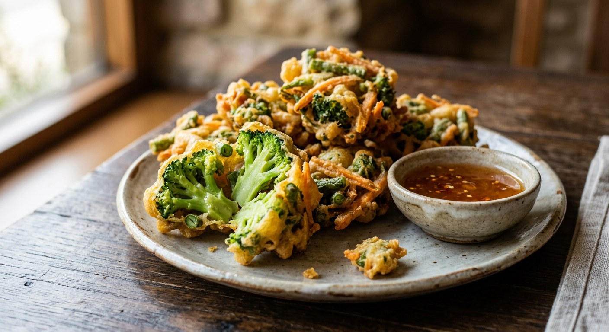

Thai vegetable fritters — crispy battered mixed vegetables deep-fried until golden, served with tangy tamarind-peanut dipping sauce or sweet chilli sauce.

ผักทอด
Crispy golden vegetable fritters with a light, airy batter that lets the natural flavours of seasonal vegetables shine through — a beloved Thai street food that transforms simple produce into irresistible snacks.
Pak tod represents Thai cooking's philosophy of making the most of what's available. Street vendors and home cooks alike use whatever vegetables look best at the market, creating different combinations based on season, preference, and budget. The technique remains consistent while the ingredients adapt to circumstances.
The appeal lies in the textural transformation: sturdy vegetables becoming tender within their crispy shells, bitter greens turning sweet, and tough stems becoming pleasantly chewy. Each vegetable contributes its own character while the unified batter treatment creates harmony.
| Thai | English | Amount |
|---|---|---|
| ผักรวม | Mixed vegetables (choose 4-5 types), see variations below for best options | 400g total |
| Thai | English | Amount |
|---|---|---|
| แป้งทอดกรอบ | Crispy frying flour | 7 tbsp |
| แป้งสาลี | Plain flour, optional, for extra structure | 3 tbsp |
| ไข่ไก่ | Egg, optional, for richer batter | 1 |
| น้ำเย็นจัด หรือ น้ำโซดา | Ice-cold water OR soda water | 5-6 tbsp |
| ผงฟู | Baking powder, for extra lightness | 1/4 tsp |
| ซีอิ๊วขาว | Light soy sauce | 1/2 tsp |
| พริกไทยขาว | White pepper | 1/4 tsp |
| Thai | English | Amount |
|---|---|---|
| น้ำมะขามเปียก | Tamarind juice | 2 tbsp |
| น้ำตาลปี๊บ | Palm sugar | 2 tbsp |
| น้ำเปล่า | Water | 1/4 cup |
| เกลือ | Salt | 1/2 tsp |
| ถั่วลิสงคั่ว | Roasted peanuts | 2 tbsp, crushed |
| พริกป่น | Chilli powder | 1/2 tsp |
| Thai | English | Amount |
|---|---|---|
| น้ำมันพืช | Vegetable oil | for deep frying |
Mixing textures creates interest. The best pak tod combines different vegetable types: something leafy (for delicate texture), something firm (for substance), and perhaps something unique for character. Traditional combinations might include water spinach, eggplant, and cha-om for varied flavours and textures.
Uniform sizing ensures even cooking. Cut firm vegetables like carrots and eggplant into pieces that will cook through in the same time as the batter crisps. Leafy vegetables can be left in larger pieces since they cook quickly.
Moisture management is crucial. Wet vegetables dilute the batter and prevent proper crisping. Pat everything completely dry, and for watery vegetables like cucumber or tomato (rarely used for this reason), extra drying time helps.
Lightness comes from technique and temperature. Ice-cold liquid creates steam when it hits hot oil, puffing the batter. The addition of baking powder provides extra lift, while the brief resting period allows the flour to hydrate properly.
Consistency determines success. The batter should coat vegetables evenly without being so thick it dominates their flavour. It should fall from a spoon in ribbons but not be so thin it doesn't provide coverage.
Minimal mixing preserves texture. Over-stirring develops gluten, creating tough rather than crispy fritters. Mix just until ingredients are combined, leaving the batter slightly lumpy rather than perfectly smooth.
Temperature control prevents greasiness. At 170-180°C, the batter sets immediately upon contact with oil, creating a barrier that prevents oil absorption. Lower temperatures result in soggy, oil-soaked fritters.
Batch size affects results. Overcrowding drops oil temperature and creates uneven cooking. Fry in small batches, allowing oil temperature to recover between additions.
Timing varies by vegetable. Leafy greens might need only 1-2 minutes, while denser vegetables like sweet potato require 3-4 minutes. Visual cues (golden colour, hollow sound when tapped) are more reliable than strict timing.
Traditional nam jim balances sweet, sour, salty, and spicy elements. The tamarind provides sourness, palm sugar sweetness, peanuts add texture and richness, while chilli powder brings heat. This four-flavour balance is fundamental to Thai cuisine.
Texture variation comes from the peanut addition. Some prefer smooth sauce, others enjoy the slight grittiness from crushed peanuts. The sauce should be thick enough to coat the fritters without being pasty.
Modern alternatives include sweet chilli sauce or even tomato ketchup (especially popular with children), though traditional accompaniments offer more complex flavour development.
Cool season vegetables (October-February) include Chinese broccoli, lettuce varieties, and root vegetables that fry beautifully. Hot season brings abundance of squashes, gourds, and heat-loving greens. Rainy season vegetables like water spinach and various wild herbs create some of the most interesting combinations.
Regional preferences affect vegetable choices. Northern Thailand favours bitter vegetables and wild herbs, while southern regions might include more tropical varieties and seafood additions.
Best consumed immediately — the contrast between crispy exterior and tender interior fades quickly as steam from the vegetables softens the coating. Unlike some fried foods, vegetable fritters don't reheat well.
Advance preparation can include washing and cutting vegetables and mixing dry ingredients, but the batter should be made fresh and vegetables fried at serving time.
The satisfaction of perfect pak tod comes from that moment when you bite through the shatteringly crisp coating to find perfectly cooked vegetables inside — each bite offering both the comfort of familiar technique and the surprise of seasonal variety.
This recipe is translated from the following Thai-language sources. Where they disagree, we've said so.
1. Aroifin — https://aroifin.com/recipes/vegetable-tempura/
2. EzyThaiCooking (via Lemon8) — https://www.lemon8-app.com/@pankanprung/7523188620347212296